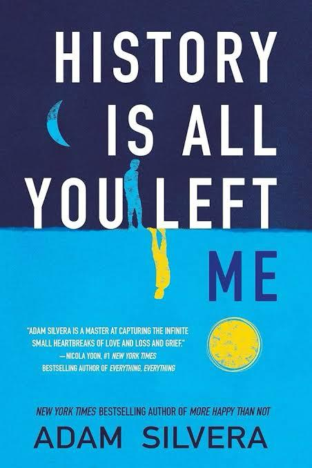
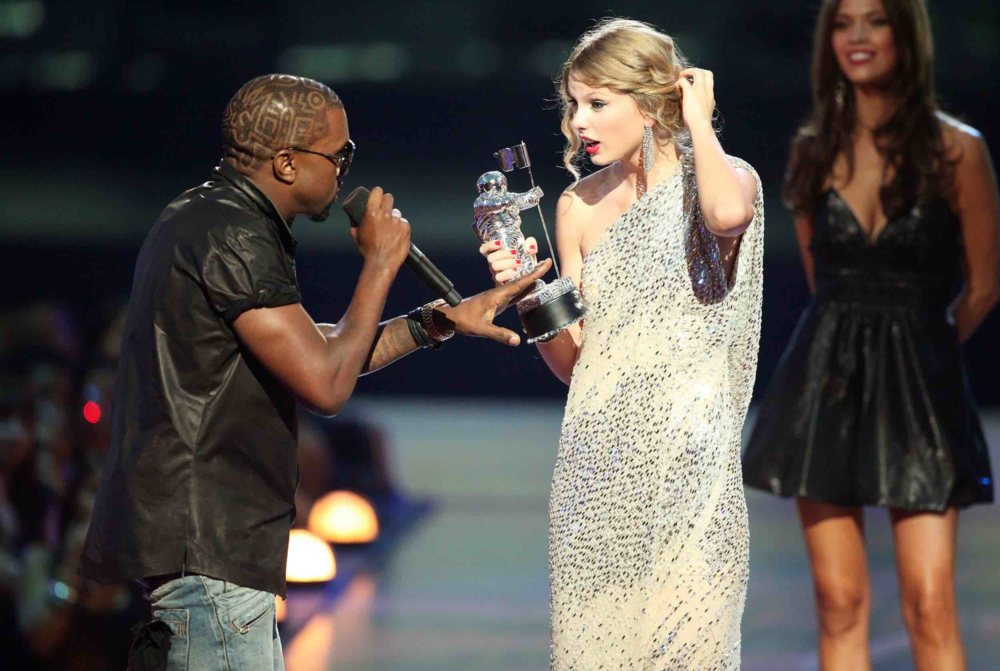

Me gusta leer libros de romance y de fantasía. Mi libro favorito se llama “Solo quedó nuestra historia” y trata de una pareja de mejores amigos que se vuelven novios, pero después uno de ellos lamentablemente fallece, y el libro transcurre de cómo su amigo-novio sobrelleva toda la situación.
También me gusta hacer postres, en especial brownies o galletas. Al momento de hacerlo, me parece un proceso relajador llevar a cabo una serie de pasos para que al final tengas un rico postre.
También me gusta escuchar música, en especial Taylor Swift y música tipo pop y kpop.
 